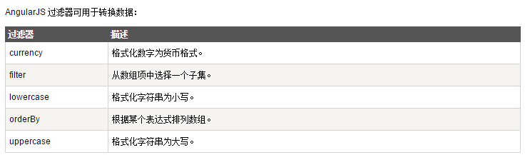

过滤器可以使用一个管道字符（|）添加到表达式和指令中。
姓名为 {{ person.lastNameEn | uppercase }}
姓名为 {{ person.lastNameEn | lowercase }}
过滤器可以通过一个管道字符（|）和一个过滤器添加到指令中。
orderBy 过滤器根据某个表达式排列数组：
输入过滤器可以通过一个管道字符（|）和一个过滤器添加到指令中，该过滤器后跟一个冒号和一个模型名称。
filter 过滤器从数组中选择一个子集：
输入过滤：